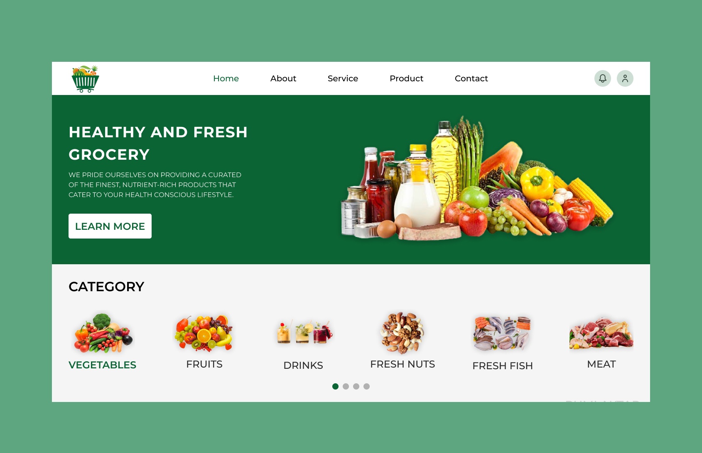
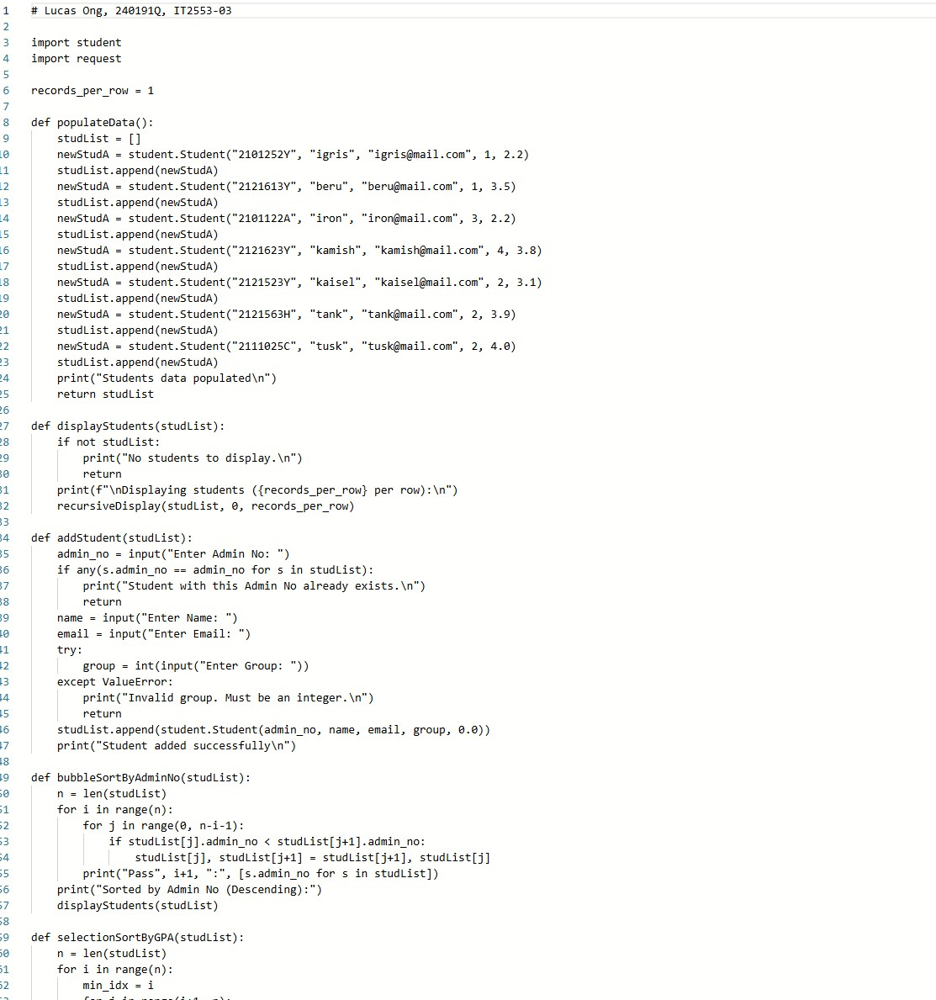

Application Development Project (1st year)
About: Designed and implemented a secure web portal using Python Flask and SQL to manage student records and authentication.
My Role: Led backend development, applied encryption protocols for user data, and conducted penetration testing to identify vulnerabilities. Collaborated with teammates on UI integration and database schema design.
Work Process: Followed Agile sprints, wrote modular Python code, and documented testing procedures. Integrated SQL queries for CRUD operations and implemented role-based access control.
Results: Achieved 100% success with simulated audit requirements, demonstrating compliance with security standards. The project was showcased in class presentations and received positive feedback from lecturers.
Application Security Project (2nd year)

About: Built a community application for the elderly in Singapore to join activities hosted by local volunteers, focusing on accessibility and safety.
My Role: Implemented the front end with HTML/CSS/JavaScript and designed the database schema in SQL. Integrated security features such as password hashing, input validation, and secure session handling.
Work Process: Conducted user research with mock interviews, created wireframes, and iterated designs based on feedback. Applied secure coding practices and tested against common vulnerabilities (SQL injection, XSS).
Results: Successfully completed project with flying colours. The application passed all functional and security tests, and was praised for its usability and relevance to community needs.
Python Student Information Manager for Teachers (2nd year)
About: Developed a streamlined Python program that allows teachers to manage student groups, track performance, and generate reports.
Features: Functions for finding, sorting, displaying, and inputting student data. Designed with a simple text-based interface for ease of use.
My Role: Wrote the full Python codebase, focusing on error handling, data validation, and user experience. Designed algorithms for sorting and searching datasets efficiently.
Work Process: Applied modular programming principles, tested with sample datasets, and iterated based on teacher feedback. Documented usage instructions and created test cases to validate functionality.
Results: Application handled datasets with no errors and passed all functional tests. Teachers found it intuitive and reliable, making it a useful tool for classroom management.